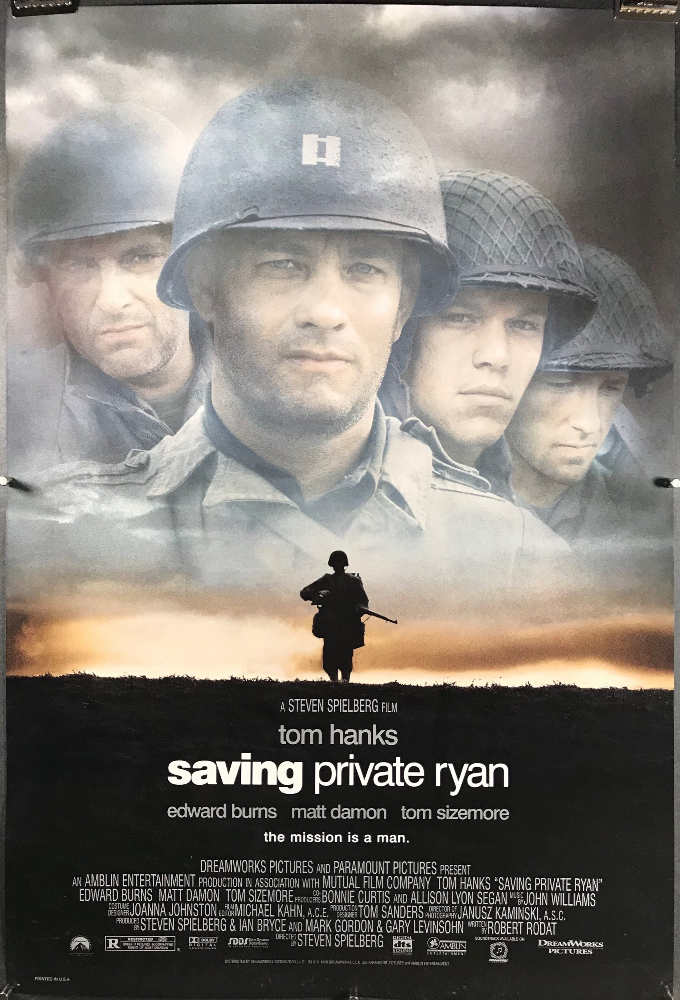

Captain John Miller (Tom Hanks) takes his men behind enemy lines to find Private James Ryan, whose three brothers have been killed in combat. Surrounded by the brutal realties of war, while searching for Ryan, each man embarks upon a personal journey and discovers their own strength to triumph over an uncertain future with honor, decency and courage. Check out more here!
Over the next page you will see more on the cast and the page creators details.